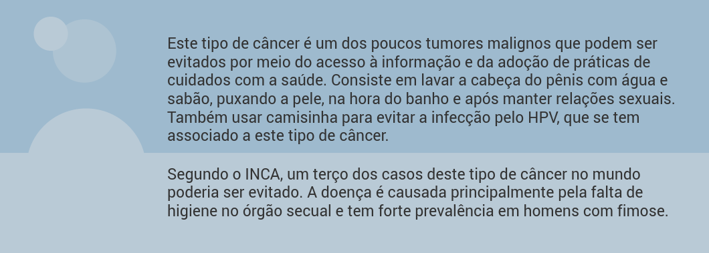

Sumário
Disfunções e outros agravos relacionados à saúde sexual
Nesta unidade, você irá aprender conteúdos relacionados às disfunções sexuais e neoplasias relacionados à saúde sexual e reprodutiva. Além disso, será capaz de compreender as intercorrências na saúde sexual do adolescente e do homem idoso.
Disfunções sexuais
A Organização Mundial de Saúde (OMS) define saúde sexual como um estado físico, emocional, mental e social de bem-estar em relação à sexualidade; não é meramente ausência de doenças, disfunções ou debilidades.
A saúde sexual requer abordagem positiva e respeitosa da sexualidade, das relações sexuais, tanto quanto a possibilidade de ter experiências prazerosas e sexo seguro, livre de coerção, discriminação e violência.
Esse é um tema importante a ser incorporado às ações desenvolvidas na Atenção Primária à Saúde (APS), com a finalidade de contribuir para uma melhor qualidade de vida e de saúde das pessoas.
Você tem um papel fundamental na promoção da saúde sexual, reprodutiva e na identificação das dificuldades e disfunções sexuais, tendo em vista a sua atuação mais próxima das pessoas em seu contexto familiar e social.
Nesta unidade discutiremos alguns agravos que atingem a saúde sexual e a saúde reprodutiva (SSSR) do homem, iniciando pelas disfunções sexuais. As disfunções sexuais são problemas que ocorrem em uma ou mais das fases do ciclo de resposta sexual, por falta, excesso, desconforto e/ou dor na expressão e no desenvolvimento dessas fases, manifestando-se de forma persistente ou recorrente (BRASIL, 2010). O diagnóstico das disfunções sexuais é tão importante quanto a identificação de qualquer outro agravo à saúde, e de suma relevância, uma vez que elas interferem na qualidade de vida das pessoas (BRASIL, 2010).
A maioria dos casos de disfunção sexual está relacionada a problemas psicológicos ou no relacionamento. Mas podem resultar de problemas orgânicos ou de uso de substâncias, como drogas e remédios. Simbolicamente, a ereção costuma se associar à força e potência, constituindo-se numa das expressões centrais da masculinidade (GOMES et al., 2008).
Neste sentido, destaca-se um estudo realizado em 380 cidades do Brasil que avaliou 71.503 homens, com idade média de 49,8 anos (desvio padrão de 13,8), e encontrou prevalência de 53,5% de algum grau de disfunção erétil. Para compreender melhor, veja a seguir alguns fatores relacionados às disfunções sexuais.
Além disso, o homem pode concentrar-se na preocupação de não falhar na hora “h”, ficando passível de experimentar algum grau de dificuldade de ereção. Uma pesquisa realizada pela Universidade de São Paulo, com 10 mil pessoas, em 19 cidades, aponta que a falta de ereção é um dos quatro grandes temores do homem brasileiro. Os outros três são perda da libido, adoecer e a queda do poder aquisitivo (VINHAL, 2008). Esses temores, de certa forma, se ancoram no modelo hegemônico de masculinidades, em que o principal eixo é a dominação. Assim, não ter ereção, não ter libido, adoecer e perder o status de provedor são “problemas” que comprometem as marcas identitárias do ser homem (NASCIMENTO; GOMES, 2008).
Agora que você teve a oportunidade de conhecer um pouco sobre as disfunções sexuais na população masculina, trazemos a seguir algumas informações sobre as neoplasias mais prevalentes relacionadas à saúde sexual e reprodutiva desta população. Confira!
Neoplasias relacionados à saúde sexual e reprodutiva
Apresentamos agora algumas informações consideradas importantes para que você possa atuar na prevenção, no diagnóstico precoce e no apoio ao tratamento das neoplasias relacionadas à saúde sexual e reprodutiva da população masculina – dentre as quais o câncer de próstata, o câncer de pênis e o câncer de testículo.
Câncer de próstata
Segundo o Instituto Nacional do Câncer (INCA), o câncer de próstata é o segundo tipo mais incidente no mundo e o primeiro no Brasil. O aumento do número de casos ao longo dos anos tem alguns fatores centrais como possíveis explicações.
Dentre eles, destaca-se: o aumento da expectativa de vida, a melhoria da qualidade dos sistemas de informação, a maior disponibilidade de métodos diagnósticos e o rastreamento de câncer por meio do teste do antígeno prostático específico (PSA) e toque retal (FERLAY et al., 2014).
É importante destacar que o câncer de próstata pode estar associado à presença do vírus HPV transmitido sexualmente (FIGUEIREDO et al., 2012). Como fatores de risco para este tipo de câncer destacam-se a idade, pois tanto a incidência como a mortalidade aumentam significativamente após os 50 anos, e o fato de o pai ou irmão ter tido câncer de próstata antes dos 60 anos pode aumentar o risco em 3 a 10 vezes quando comparado à população em geral, o que pode estar relacionado a fatores genéticos hereditários, hábitos alimentares ou estilo de vida das famílias.
Evidências científicas demonstram que o benefício do diagnóstico precoce, a partir da avaliação clínica da história de saúde e encaminhamento oportuno após os primeiros sinais e sintomas, conduz a um tratamento eficaz, com redução da morte por esta causa.
Quanto ao rastreamento, as evidências científicas ainda são insuficientes para tecer recomendações a favor ou contra a adoção deste procedimento para o câncer de próstata em homens assintomáticos com idade inferior a 75 anos.
Não há evidências que essa prática seja eficaz, ou as evidências são pobres e conflitantes e a relação custo-benefício não pode ser determinada (BRASIL, 2010). Veja a seguir alguns conceitos sobre o câncer de próstata.
O INCA não recomenda o rastreamento populacional para o câncer de próstata desde 2002 e ratificou seu posicionamento na nota técnica publicada em 2013. Mesmo assim, continua acompanhando os estudos sobre rastreamento envolvendo o exame de PSA e do toque retal.
Câncer de pênis
O câncer de pênis tem maior incidência em homens a partir dos 50 anos, embora possa atingir também os mais jovens. Este tipo de câncer tem uma incidência global menor que 1/100.000 homens na Europa e nos Estados Unidos, devido aos fatores de risco que interferem significativamente nesse tipo de câncer.
Tais fatores são representados pelas características étnicas e localização geográfica, por exemplo, além de hábitos sociais e culturais, práticas higiênicas e religiosas. Entretanto, no Brasil a incidência supera a Índia e o Egito. O tumor peniano representa 2% dos casos de câncer que atingem os homens brasileiros (INCA, 2013).
A ocorrência é maior nas regiões Norte e Nordeste do país. Há o aumento de casos de câncer de pênis, principalmente no Maranhão, na Bahia, no Piauí e em Pernambuco, o que faz sua incidência ser considerada um problema de saúde pública (UFBA, 2014). No Maranhão, é identificado um caso de câncer de pênis a cada 13 dias (SOCIEDADE BRASILEIRA DE UROLOGIA, 2014).
O câncer de pênis inicialmente não apresenta sintomas, mas tem como causa principal o acúmulo de secreções na glande. Pode evoluir para uma infecção que se transforma em ferida. Se não curada, vira um tumor que aos poucos vai lesionando a região.
A ação educativa para a prevenção de câncer de pênis e a detecção precoce devem ser entendidas como compromisso profissional com a promoção da autonomia do homem no autocuidado e com a qualidade da atenção à saúde. São aspectos que precisam de atenção:
- perda de pigmentação ou manchas esbranquiçadas;
- feridas e caroços no pênis que não desapareceram após tratamento e apresentem secreções e mau cheiro;
- tumoração no pênis e/ou na virilha;
- inflamações de longo período com vermelhidão e coceira, principalmente nos portadores de fimose.
O diagnóstico precoce é fundamental para evitar as consequências físicas, sexuais e psicológicas ao homem. Quanto mais cedo for iniciado o tratamento, maior é a chance de cura e menor o risco de amputação do pênis.
Câncer de testículo
O tumor de testículo representa 5% do total dos casos de câncer que atingem os homens, e sua maior incidência está entre os homens de 15 a 50 anos de idade. Para a detecção, o autoexame mensal representa uma ação de extrema importância.
Você pode orientar para que os homens realizem o autoexame uma vez ao mês após tomar um banho quente, porque o calor relaxa o escroto e facilita a observação de anormalidade de tamanho, sensibilidade e densidade. O câncer de testículo é um câncer agressivo com rápida evolução.
O diagnóstico precoce a partir da avaliação clínica complementado por biópsia oportuniza alto índice de cura porque este tipo de câncer responde bem a tratamento quimioterápico. Quando detectado precocemente, tem baixo índice de mortalidade.
Intercorrências na saúde sexual do adolescente
Para os adolescentes a sexualidade tem uma dimensão especial: é nesta etapa da vida que a capacidade reprodutiva vem aliada às transformações biológicas, psicológicas e sociais. A maturação sexual vem acompanhada do acelerado crescimento físico.
Informações sobre a saúde sexual e reprodutiva são importantes para os adolescentes, tanto na promoção da saúde como também na prevenção de possíveis intercorrências. Dentre as principais intercorrências na saúde sexual e reprodutiva podem estar as IST e a gravidez precoce da parceira.
Uma estratégia importante de alcance desta população é o Programa Saúde na Escola, em que profissionais da saúde atuam de forma integrada aos profissionais da educação. Um dos temas que podem ser desenvolvidos é o da saúde sexual e reprodutiva e as principais intercorrências, com as medidas de prevenção e diagnóstico precoce. Destaca-se ainda que, apesar de raro, o câncer de testículo é o que mais preocupa nesta fase da vida, pois atinge os homens na idade produtiva a partir dos 15 anos.
Intercorrências na saúde sexual do idoso
A vivência da sexualidade faz parte de todas as etapas da vida e sua expressão saudável é fundamental para a felicidade e realização do ser humano. A crença de que o avançar da idade e o declinar da atividade sexual estão inexoravelmente ligados também tem sido responsável pela pouca atenção dada a essa questão nessa etapa da vida.
Essa questão aumenta a vulnerabilidade do idoso, inclusive, para as IST/HIV/AIDS (BRASIL, 2013). O homem idoso tem suas funções sexuais alteradas basicamente pelas mudanças fisiológicas e anatômicas provocadas pelo processo de envelhecimento, porém não se pode associar essa fase da vida à perda ou à incapacidade de manter relações sexuais.
Dentre as ações de promoção da saúde sexual e reprodutiva dos homens, observe as seguintes orientações:
- Fazer uma preparação para a terceira idade ainda entre os 40 e 50 anos, identificando e afastando os fatores de risco que provocam ou que aceleram o envelhecimento.
- Cultivar bons hábitos alimentares, perder e manter o peso adequado, praticar exercícios físicos, cultivar boas amizades, manter bom convívio familiar.
- Entender, aceitar e se adaptar progressivamente às alterações do envelhecimento.
- Eliminar os fatores de risco como fumo, drogas, álcool, sedentarismo, causas de aborrecimentos, excesso de gordura, sal e açúcar.
- Procurar tratamento para as doenças crônicas, como diabetes, hipertensão, hipercolesterolemia.
- Tratar os problemas psicológicos e emocionais como ansiedade, estresse e depressão.
- Procurar manter vida sexual ativa.
Nesta unidade destacamos disfunções e agravos relacionados à saúde sexual e reprodutiva do homem em diferentes etapas da vida. Também fornecemos alguns subsídios que podem auxiliar na sua atuação profissional. Agora, siga para a última unidade!